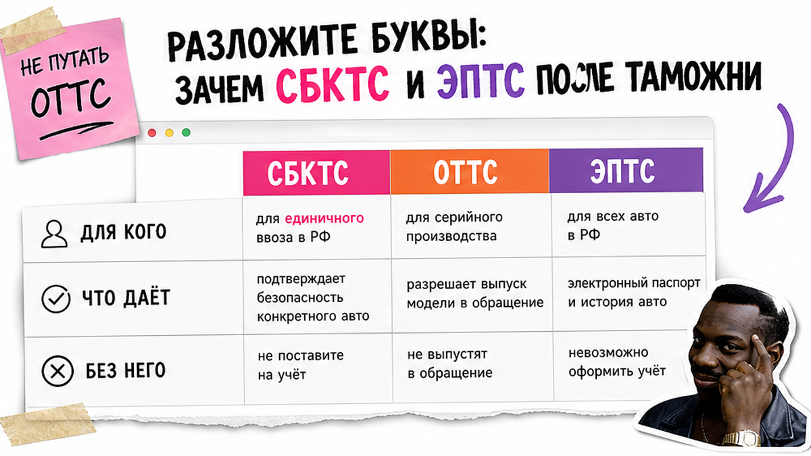
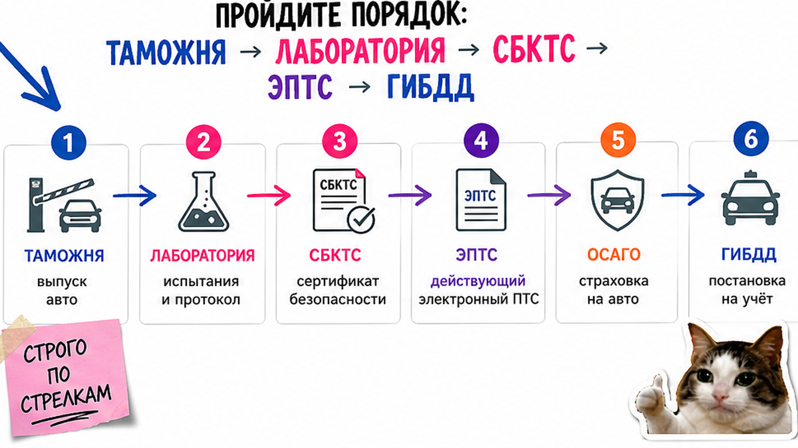
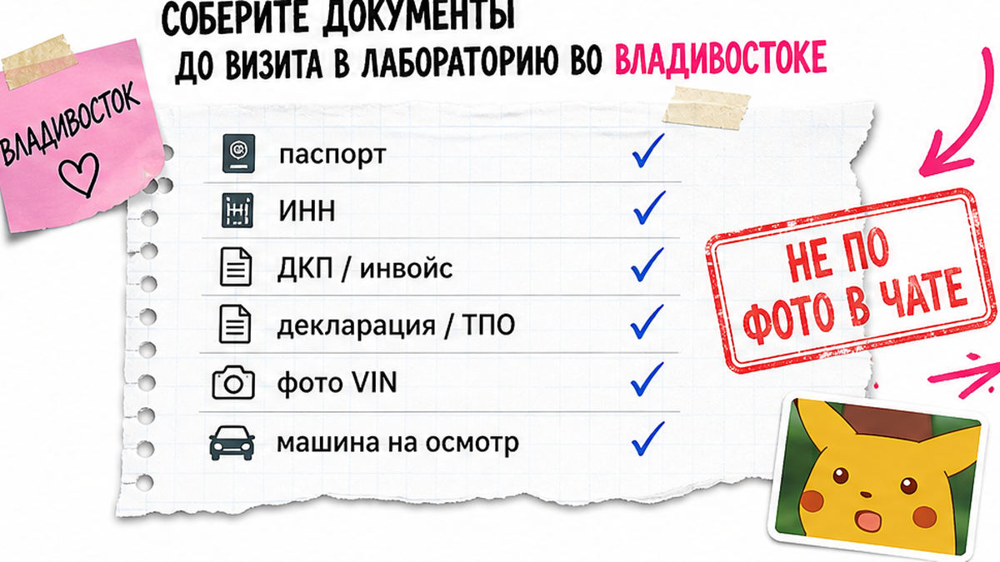

Машина уже выпущена таможней во Владивостоке, а дальше – каша из СБКТС, ЭПТС и ЭРА-ГЛОНАСС. Страх знакомый: не сделаю ОСАГО, не поставлю на учёт, куплю "бумагу" у посредника или застряну на месяц со статусом "незавершённый". Ниже – понятный порядок для физлица: лаборатория → СБКТС → действующий ЭПТС → ОСАГО → ГИБДД. После гайда вы сами проверите реестры и не оплатите лишнюю "кнопку" вслепую.
Коротко: После выпуска таможней идите в аккредитованную лабораторию, получите СБКТС и ЭПТС, дождитесь статуса "действующий" на portal.elpts.ru, затем ОСАГО и ГИБДД. Без СБКТС на единичный ввоз ЭПТС не оформить. Для физлица при личном ввозе отсрочка по УВЭОС (ЭРА-ГЛОНАСС) действует до 31.12.2027 – перед оплатой кнопки сверьте статус с лабораторией, а не с рекламным прайсом.
Игорь из Новосибирска ждал Toyota из Японии у порта. Брокер сказал: "без кнопки ГЛОНАСС и СБКТС не выдадут ЭПТС, платите 80 тысяч сейчас". Он почти согласился – пока не узнал, что для физлица отсрочка по УВЭОС ещё действует, а СБКТС выдаёт только аккредитованная лаборатория после осмотра, а не "по фото в мессенджере". Мы в Авто-Сейлс во Владивостоке видим такие разводы у СВХ часто.
Если вы только вышли с СВХ во Владивостоке или закончили растаможку авто из Японии, этот чек-лист – про следующий этап: документы, без которых машина "висит" без номеров.

На пальцах: СБКТС – свидетельство о безопасности конструкции. Это "паспорт безопасности" именно вашей одной машины с пробегом: лаборатория подтверждает соответствие техрегламенту ТР ТС 018/2011. ЭПТС – электронный паспорт транспортного средства, цифровая замена бумажного ПТС (с 01.11.2020 на ввозимые и новые ТС оформляют именно его).
ОТТС – другой документ: одобрение типа для серии/завода. Частнику при единичном ввозе обычно нужен СБКТС, не ОТТС. Типичная ошибка – просить в чате "ОТТС как у дилера" и терять дни.
| Документ | Для кого | Что даёт | Без него |
|---|---|---|---|
| СБКТС | Единичный ввоз, б/у из Азии | Подтверждение безопасности вашей машины | Нет законного ЭПТС/учёта |
| ОТТС | Серия, завод, дилер | Одобрение типа модели | Частнику обычно не подходит |
| ЭПТС | Владелец после СБКТС | Электронный ПТС в системе СЭП | Нет ОСАГО и ГИБДД |
Делать: запрашивайте СБКТС на вашу машину с осмотром. Не делать: путать ОТТС и СБКТС и покупать "сертификат без лаборатории".

Схема после выпуска:
Выпуск таможней → (УВЭОС, если требуется вашему статусу) → Осмотр в аккредитованной лаборатории → СБКТС в реестре → ЭПТС в СЭП → статус "действующий" → ОСАГО → ГИБДД
На практике полный цикл после выпуска часто занимает от примерно 1–2 недель "без косяков" до плюс ожидания активации ЭПТС по утильсбору. СБКТС при полном пакете нередко делают за 1–3 рабочих дня; во Владивостоке при низкой загрузке встречаются оценки 2–5 дней, в обзорах 2026 – и 5–10. Ориентир, не гарантия "за сутки".
Делать: идти строго по стрелкам. Не делать: ехать в ГИБДД с "незавершённым" или "аннулированным" ЭПТС.

Типичный минимум перед осмотром:
Перед записью снимите спорный тюнинг и уточните свет фар. В реальном проекте лаборатории часто отказывают из-за "японского" света, нечитаемого VIN или отсутствия маркировок ЕЭК на стёклах/ремнях – и вы платите повторно плюс дни на СВХ.
Ориентир рынка по цене СБКТС в 2026: часто 14–35 тыс. ₽; во Владивостоке нижняя граница бывает ниже из-за конкуренции. Госпошлина оператору СЭП за ЭПТС – 600 ₽; услуги уполномоченной организации отдельно (оценки порядка 1,5–3 тыс. ₽). Уточняйте в лаборатории. Суммы пошлин и утильсбора здесь не считаем – актуальный расчёт в каталоге Авто-Сейлс.
Делать: собрать пакет и спросить про фары до визита. Не делать: оплачивать "СБКТС без осмотра" посреднику без аккредитации.
УВЭОС (устройство вызова экстренных служб, в быту "кнопка ЭРА-ГЛОНАСС") – блок экстренного вызова. В рекламе во Владивостоке часто пишут: "ЭРА обязательна для СБКТС". Но по ПП РФ №855 (продление ПП №76) для физлиц при личном ввозе проверку УВЭОС временно не проводят до 31.12.2027. Для ЮЛ и ИП при ввозе категорий M/N обязанность, как правило, сохраняется.
Тут важный момент: уже в 2026 обсуждают досрочную отмену отсрочки. Перед оплатой кнопки спросите аккредитованную лабораторию и сверьте с актуальной редакцией постановления – не с прайсом в чате. Например, Игорь сэкономил бы десятки тысяч, задав один вопрос: "я физлицо, личный ввоз – нужна ли УВЭОС именно сегодня?".
Делать: зафиксировать статус ввоза и спросить лабораторию письменно. Не делать: платить за кнопку только потому что "так сказал брокер".
СБКТС выдаёт только аккредитованная испытательная лаборатория. Проверьте её в реестре Росаккредитации на сайте pub.fsa.gov.ru/ral, затем сам СБКТС – в сведениях Росстандарта. Посредник "по фото" законное свидетельство не рисует.
Статусы ЭПТС: действующий / незавершённый / погашенный / аннулированный. В ГИБДД нужен именно действующий. Частая причина "незавершённого" – задержка передачи данных об утильсборе от ФТС в СЭП: в гайдах типично около 14 дней, иногда до примерно 31. Проверяйте VIN на portal.elpts.ru; при зависании – help.elpts.ru. Про сам утильсбор на авто 2026 – отдельно; здесь он важен как "данные, которые должны долететь".
Делать: ждать "действующий" и только потом ОСАГО/ГИБДД. Не делать: покупать машину с аннулированным ЭПТС или "ускорение" у неизвестного чата.
Критерий результата: СБКТС в реестре ✓, ЭПТС "действующий" ✓, ОСАГО ✓, пакет готов к ГИБДД ✓. Если пункта нет – не едьте на учёт "на авось".
Делать: отметить чек-лист галочками. Не делать: пропускать проверку реестра из-за обещания "за день".
Нужен подбор под ключ – откройте каталог avto-sales125.ru или напишите в Telegram @avtosales125. Форм на странице нет: расчёты и детали – в переписке.
Материал проверен: редакция Авто-Сейлс (эксперты по авто под заказ из Японии, Кореи и Китая).
Достоверность: факты сверены на 2026-07-20 с открытыми источниками (гайды СБКТС/ЭПТС, e-pts.su, разъяснения по ПП №855/№76, реестр Росаккредитации, практика лабораторий Владивостока, Drive2) и сопровождением заказов через порт; актуальные расчёты – в каталоге.
Для единичного ввоза б/у – нет: без СБКТС не оформят законный ЭПТС, а без него нет нормального учёта. Сначала осмотр и СБКТС в реестре, потом ЭПТС.
СБКТС часто 1–3 рабочих дня при полном пакете, иногда 2–5 или до 5–10 – зависит от загрузки и состояния машины. Плюс ожидание статуса "действующий" по утильсбору. Не ориентируйтесь на рекламу "за 1 день всегда".
ОТТС – для типа/серии (заводы, дилеры). СБКТС – для вашей одной машины с пробегом. Физлицу при ввозе из Азии обычно нужен СБКТС: просите именно его.
По отсрочке для физлиц при личном ввозе проверку УВЭОС не проводят до 31.12.2027. Для ЮЛ/ИП правило другое. Перед оплатой кнопки переспросите аккредитованную лабораторию – в 2026 обсуждают досрочную отмену.
Не ездите в ГИБДД. Проверьте VIN на portal.elpts.ru и ждите передачу данных об утильсборе (часто около двух недель). Если статус завис дольше разумного – пишите в поддержку СЭП (help.elpts.ru).
Платите только аккредитованной лаборатории после осмотра. Проверьте лабораторию в Росаккредитации и СБКТС в реестре по VIN. "Сертификат из чата без машины" – отказ.
Передайте сопровождение команде, которая работает с Владивостоком постоянно. В Авто-Сейлс это переписка в Telegram – без форм на странице и без оплаты "кнопки" вслепую.